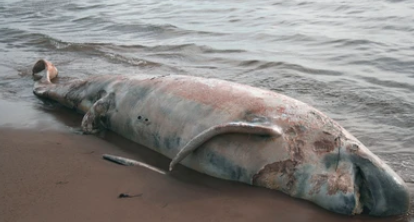
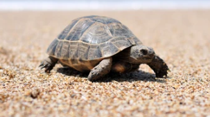

{% extends 'base.html' %}
{% block head %}
{% endblock %}
{% block body %}
Poseidon
Poseidon can help reduce carbon
By saving whales and forests.
Now use poseidon, save sea turtles!
supported by NASA Hackathon 2021 at Taipei


Chia-Lin Chen(陳佳琳), Meng-Chuan, Lee(李孟娟)
{% endblock %}